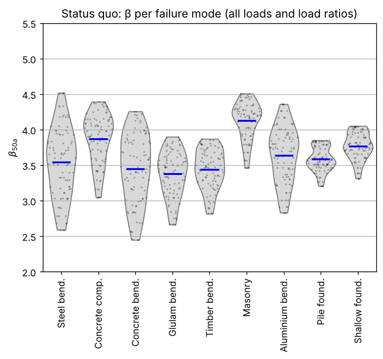
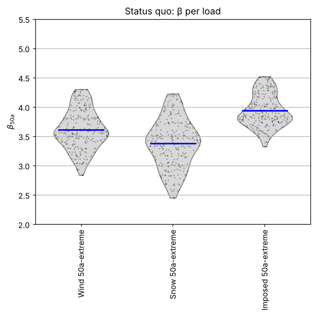
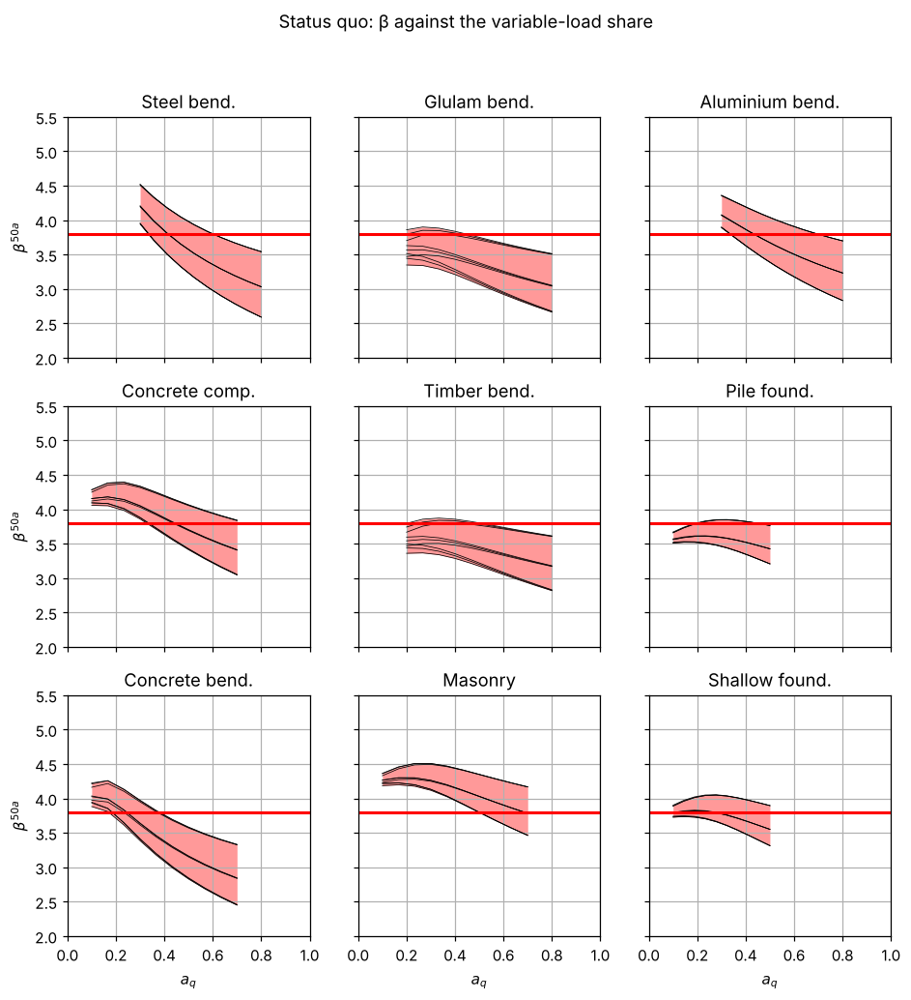
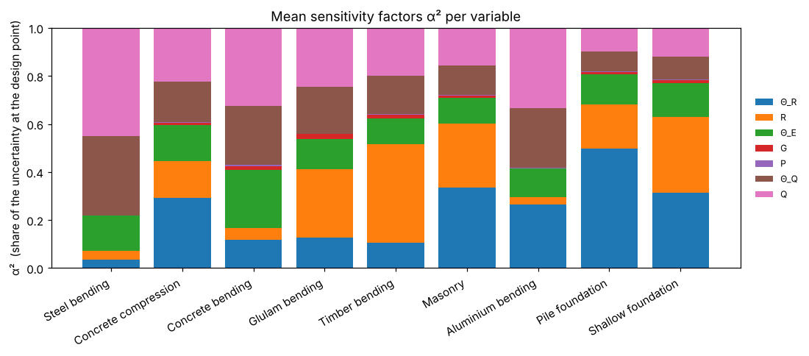

16. Lesson 4 — The sweep: how reliable are structures designed with the present Eurocode?#
A code is used for many structures. The AHG model represents them by
9 failure modes (materials and mechanisms), each with a weight for how common it is,
3 dominating variable loads (wind, snow, imposed), also weighted,
a grid of load proportions: 3 values of \(a_G\) (share of self-weight in the permanent load) and 10 values of \(a_Q\) (share of the variable load).
That is 9 × 3 × 3 × 10 = 810 design situations, each with the weight \(w = w_{mode}\,w_{load}/(n_{a_G} n_{a_Q})\). Evaluating all of them with the present partial factors is the status quo of the code — the starting point of every calibration.
import os
import sys
import time
import numpy as np
import pandas as pd
try:
import codecal as cc
except ImportError:
sys.path.insert(0, os.path.abspath('..'))
import codecal as cc
from codecal import plots
FIG = 'figures'
os.makedirs(FIG, exist_ok=True)
pd.set_option('display.width', 120)
def save(fig, name):
"""Save a figure next to the lesson and show it (inline in Jupyter/Spyder)."""
fig.savefig(os.path.join(FIG, name), dpi=150, bbox_inches='tight')
try:
from IPython.display import display
display(fig)
except ImportError: # plain python: the PNG in figures/ is the output
pass
16.1. 1. The model#
Everything is in codecal/ahg2021.py — a table of coefficients of
variation, characteristic values and weights. Read it once; it is the
whole “input” of the study.
model = cc.ahg_model() # 10 M Monte-Carlo draws for the characteristic values (a few seconds)
print(model.summary())
AHG 2021 — Reliability Background of the Eurocodes
reference period 50 a, target β 3.8
9 failure modes × 3 loads × 3 a_G × 10 a_Q = 810 design situations
Failure modes:
Steel bending: Θ_R mean 1.15 CoV 0.05, R CoV 0.050 (x_k 0.830), γ_M 1.0, a_Q (0.3, 0.8), a_G (0.6, 1.0), w 0.17
Concrete compression: Θ_R mean 0.97 CoV 0.14, R CoV 0.100 (x_k 0.844), γ_M 1.5, a_Q (0.1, 0.7), a_G (0.6, 1.0), w 0.12
Concrete bending: Θ_R mean 1.03 CoV 0.07, R CoV 0.045 (x_k 0.928), γ_M 1.15, a_Q (0.1, 0.7), a_G (0.6, 1.0), w 0.4
Glulam bending: Θ_R mean 1.00 CoV 0.10, R CoV 0.150 (x_k 0.774), γ_M 1.25, a_Q (0.2, 0.8), a_G (0.6, 1.0), w 0.035
Timber bending: Θ_R mean 1.00 CoV 0.10, R CoV 0.200 (x_k 0.708), γ_M 1.3, a_Q (0.2, 0.8), a_G (0.6, 1.0), w 0.017
Masonry: Θ_R mean 1.16 CoV 0.18, R CoV 0.160 (x_k 0.760), γ_M 1.5, a_Q (0.1, 0.7), a_G (0.6, 1.0), w 0.12
Aluminium bending: Θ_R mean 1.27 CoV 0.15, R CoV 0.050 (x_k 0.850), γ_M 1.1, a_Q (0.3, 0.8), a_G (0.6, 1.0), w 0.017
Pile foundation: Θ_R mean 1.00 CoV 0.20, R CoV 0.120 (x_k 0.816), γ_M 1.5, a_Q (0.1, 0.5), a_G (0.6, 1.0), w 0.06
Shallow foundation: Θ_R mean 1.00 CoV 0.15, R CoV 0.150 (x_k 0.774), γ_M 1.4, a_Q (0.1, 0.5), a_G (0.6, 1.0), w 0.06
Variable loads:
wind: Θ_Q mean 0.97 CoV 0.26, Q Gumbel CoV 0.140 (q_k 1.083), ψ₀ 0.6, w 0.4
snow: Θ_Q mean 0.81 CoV 0.26, Q Gumbel CoV 0.200 (q_k 0.821), ψ₀ 0.5, w 0.1
imposed: Θ_Q mean 1.00 CoV 0.10, Q Gumbel CoV 0.260 (q_k 1.350), ψ₀ 0.7, w 0.5
Load-effect model uncertainty: Lognormal(mean=1, CoV=0.1), x_k=1
Permanent load (other than self-weight): Normal(mean=1, CoV=0.1), x_k=1
16.2. 2. The status quo: β of every design situation with γ_G = 1.35, γ_Q = 1.5#
evaluate runs FORM for each situation and returns a table — one row per
situation with its β, design parameter z and sensitivity factors.
t0 = time.time()
df = cc.evaluate(model, cc.START_VALUES, equation='8.12')
print(f"{len(df)} situations evaluated in {time.time() - t0:.1f} s")
print(df.head().round(3).to_string())
810 situations evaluated in 0.9 s
mode load a_G a_Q weight z beta form_iterations converged alpha_Θ_R alpha_R alpha_Θ_E alpha_G alpha_P alpha_Θ_Q alpha_Q
0 Steel bending wind 0.6 0.300 0.002 1.726 4.194 14 True -0.241 -0.241 0.482 0.034 0.092 0.637 0.487
1 Steel bending wind 0.6 0.356 0.002 1.744 3.987 13 True -0.225 -0.225 0.449 0.028 0.075 0.662 0.503
2 Steel bending wind 0.6 0.411 0.002 1.763 3.808 12 True -0.212 -0.212 0.423 0.023 0.063 0.680 0.513
3 Steel bending wind 0.6 0.467 0.002 1.781 3.653 12 True -0.202 -0.202 0.403 0.020 0.052 0.695 0.520
4 Steel bending wind 0.6 0.522 0.002 1.800 3.518 11 True -0.193 -0.193 0.385 0.016 0.044 0.707 0.524
The headline number of the status quo is the weighted-mean reliability index. The AHG reports it as 3.74; with the weights normalised to sum to 1 it is 3.74 as well (the input weights sum to 0.999):
beta_mean = cc.weighted_mean_beta(df)
print(f"weighted-mean β = {beta_mean:.3f} (target 3.8)")
print(f"range over the situations: {df['beta'].min():.2f} … {df['beta'].max():.2f}")
weighted-mean β = 3.741 (target 3.8)
range over the situations: 2.45 … 4.52
16.3. 3. Where is the reliability high, where is it low?#
Mean β per failure mode and load — the table the AHG discussed:
table = cc.beta_table(df)
print(table.round(2))
load wind snow imposed
mode
Steel bending 3.52 3.17 3.94
Concrete compression 3.84 3.62 4.15
Concrete bending 3.42 3.15 3.78
Glulam bending 3.34 3.08 3.71
Timber bending 3.41 3.17 3.74
Masonry 4.10 3.92 4.37
Aluminium bending 3.61 3.31 4.00
Pile foundation 3.55 3.42 3.79
Shallow foundation 3.73 3.59 3.98
Snow-dominated structures are consistently below the target, imposed load above it; masonry and concrete compression are high (large resistance model uncertainty with bias, large γ_M), glulam and timber low. The spread within a group is the load ratio: the next figure shows the whole distribution, the one after it β against \(a_Q\).
save(plots.plot_beta_distribution(df, by='mode', beta_target=3.8,
title='Status quo: β per failure mode (all loads and load ratios)'),
'lesson04_beta_by_mode.png')
save(plots.plot_beta_distribution(df, by='load', beta_target=3.8, title='Status quo: β per load'),
'lesson04_beta_by_load.png')
save(plots.plot_beta_vs_aQ(df, beta_target=3.8, title='Status quo: β against the variable-load share'),
'lesson04_beta_vs_aQ.png')



Every panel shows the same pattern: β falls with \(a_Q\). With the present factors the code is more conservative for permanent-load-dominated structures than for variable-load-dominated ones. This is the “reliability differentiation” that a calibration of \(\gamma_G\) versus \(\gamma_Q\) tries to flatten.
16.4. 4. Which uncertainties drive the result?#
The mean sensitivity factors \(\alpha_i^2\) per failure mode say which variables the reliability depends on — and therefore which parts of the probabilistic model deserve the most scrutiny:
save(plots.plot_sensitivities(df, by='mode'), 'lesson04_sensitivities.png')
mean_alpha2 = (df.filter(like='alpha_') ** 2).mean().round(3)
print("mean α² over all situations:")
print(mean_alpha2.to_string())

mean α² over all situations:
alpha_Θ_R 0.233
alpha_R 0.192
alpha_Θ_E 0.140
alpha_G 0.011
alpha_P 0.003
alpha_Θ_Q 0.183
alpha_Q 0.239
The three model uncertainties — of the resistance (\(\Theta_R\)), of the load effect (\(\Theta_E\)) and of the variable load (\(\Theta_Q\)) — together carry more than half of the sensitivity; the self-weight and the permanent load almost nothing (their CoVs are small and their characteristic values are the means). The CoVs of the model uncertainties are also the least well-known numbers of the model. Lesson 3’s exercise 3 (wind CoV 0.15 instead of 0.26) is worth doing now on the whole model.
16.5. 5. Weights#
The weighted mean is dominated by concrete bending (w = 0.40) and the imposed load (w = 0.5). Try a different weighting and see how much the headline number moves — it is a modelling decision, not a measurement:
alt = df.copy()
alt['weight'] = 1.0 / len(alt) # every situation equal
print(f"weighted-mean β, AHG weights : {beta_mean:.3f}")
print(f"weighted-mean β, equal weights: {cc.weighted_mean_beta(alt):.3f}")
df.to_csv('status_quo_sweep.csv', index=False)
print("sweep saved to status_quo_sweep.csv")
weighted-mean β, AHG weights : 3.741
weighted-mean β, equal weights: 3.646
sweep saved to status_quo_sweep.csv
16.6. Exercises#
Evaluate the status quo for eq. 8.13 and 8.14 (with ξ = 0.85). Which one gives the lowest weighted-mean β, and why (see lesson 3, section 5)?
Set
n_aQ=20and check that the weighted mean hardly changes — the grid is fine enough.Give the snow load the weight 0.4 and the wind load 0.1. How does the weighted mean react, and which calibration result would you expect?